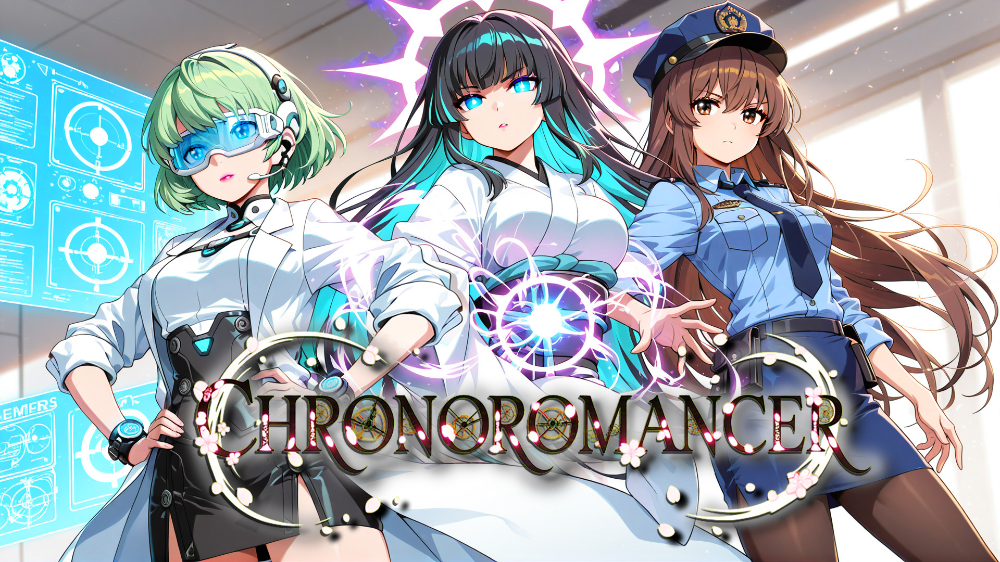

Medieval
A.R.I.A.
Meet A.R.I.A. after the floor 45 encounter, follow three home conversations, and unlock crafted-gift upgrades.

Complete portrait directory
Browse the same 184 character entries as the Player Wiki. Match their game portraits, then search by name or English and Simplified Chinese keywords.
Names, portraits and summaries match the Player Wiki. Era filters use each character’s main setting.
Meet A.R.I.A. after the floor 45 encounter, follow three home conversations, and unlock crafted-gift upgrades.

Find Aaliyah at the KTV entrance and check the venue’s late-night hours.
Follow Abby’s dance route, changing schedule and three heart-to-hearts, with lessons, dates and hotel access.

Follow AIMy’s control-room conversations, late story requirements, dates and technical lesson.
Find Akira’s examination schedule, research follow-ups, dates and pregnancy consultations.

Find Amelia’s healer-hut schedule, Willow-linked dates, two conversations and healing lessons.

Follow Andi’s personal route, plan dates and Private Time, and check her one-time gift.
Use Annette’s patrol schedule and conversation to progress the connected royal-court story.

Find Anthrax’s recruitment steps, Training Hall hours, combat lessons and army services.

Recruit Arachne from the ordinary Dungeon, prepare a vacant cell, and manage visits and monster training.
Unlock ARCHIE’s archive terminal, read records and use the record-view toggle.
Reach Arestes’s Hidden Chamber, join the Thieves Guild, and distinguish personal events from guild services.

Use Arnold’s mansion conversations and Household Risk to support the connected corporate route.
Armory and Barracks schedules, personal conversations and lessons.

Find Audrey’s garden schedule, nature lesson, Rainheart gift and three crafted-gift upgrades.
Follow Ava and Eva’s shared relationship route, evening conversations, outings and crafted gifts.
Unlock Azariel’s room, learn Empathy and Soul Sight, and use her business consultations and stone bonding.
Plan Aziza’s arcane lessons, Grimoire upgrades and current dates, conversations and private continuation.

Find Barric’s late-night alehouse conversations and one-time Communication lesson.
Build Bayne’s relationship through Syndicate scenes and unlock his Crowd Control lesson.
Find Bella’s library schedule, three conversations, gifts, dates and separate after-hours invitation.
Find Bellavia’s cellar interactions, crafted-gift upgrades and resort activities without route revelations.
Leather equipment, crafting and a one-time Intelligence lesson.

Ordinary Dungeon capture, cell visits and relationship activities.

Spell lessons, dates, Grimoire level 7 and Queenstone bonding.
Three-part dungeon recruitment, Cell 1 and resident activities.
Robot Bar presence and a one-time late event.
Recruitment conversations, tavern activities and worker upgrades.
Funhouse schedule, personal H2Hs and Syndicate navigation.
Funhouse schedule, personal activities and Syndicate prerequisites.
Restaurant events, dates and the Master Chef lesson.

Night-time visits, paid services and an independent personal route.
Find the Crystal Cavern, follow Chime’s relationship route, and check Resistance Clout requirements.
Academy lessons, four-destination event route and private visits.

Ingredients, dates, market events and the Mary Ann connection.

A personal H2H/date chain and Onyx’s maid equipment gift.
Clinic exchanges and repeatable Chronium upgrades for fortress structures.
Room commission checklist, recruitment and worker upgrades.

Three-location schedule and the Sovereign Edge lesson.

Studio visits, band recognition, three heart-to-hearts and optional dates.

Find Councilor Voss’s office and understand his dialogue and connection to current mission objectives.

Track Cressida’s alternating workplaces, personal scenes, lessons and relationship requirements.

Recruit Daphne, prepare her room, and unlock her personal visits and shared corridor events.
Public-pool access, swimming conversations, dates and the evening beach schedule.
Where to find Dex and what interactions are currently available.
Five public commissions, the Responsibility lesson and boardwalk visits.
Vampire Lounge access, the introduction and Diedra’s Talk allowance.
Open Rose & Thorn, find office events and improve worker training.
Lair access, personal conversations, two dates and Furnace Discipline.
Café and park visits, early heart-to-hearts, housing actions and current dates.
Engineering lessons, resource redistribution and Army workshops.

Dance training, the Romantic lesson, personal conversations and noble-quarter visits.
Corporate progression, three heart-to-hearts and the current conditions for Mystic Seduction.

Personal outfits, worker clothing, MAX fittings and the tailor’s exact costs.
Footprint discovery, outdoor schedules, personal conversations and recruitment.
Mansion visits, the shared Talk allowance and second-story conversations.
Quest-led progress, Wizardry lessons and the wizard initiation requirements.

Meet Gastoff, check his personal bonuses, and find the equipment and construction services you need.
Find Gem, restock mining tools, learn dungeon-wall Mining, and follow her recruitment and personal routes.
Find Ghost, follow her conversations and main-story requirements, and plan training and personal visits.
Candy Cane trades, milestone Tokens and Ginger’s Christmas interactions.

Reach Glitch’s Den and follow her lessons, personal route, recruitment and private activities.

Monastery and grove schedules, recruitment prerequisites and post-recruitment visits.
The guard captain’s patrol schedule and shared daily Talk limit.
Find the throne-room Guard and the proper hours for a royal audience.
Follow Hailey’s companionship route, supply agreement, three conversations and current evening visits.
Unlock Helsa, follow the alternating research schedule, and coordinate her dates and conversations with Torea’s route.
Find Holly’s affection milestones, holiday-task rewards, Stargazing activity and Hot Chocolate gift costs.

Recruit Honey, plan the farm and even-night barn visits, and unlock her crafted gifts and shared activities.
Unlock Isolde through five escorts, then coordinate her castle scenes, dates and conversations with Barnard’s court progress.
The Emerald Dragon exchange, recruitment, dates and crafted training gifts.
Find Jarid’s office and the shared Syndicate appearance without looking for a personal relationship menu.
Recruit Jelly, prepare an empty cell, and separate her three personal activities from daily monster training.
Follow Jennifer’s gym scenes, two conversations, five dates and the separate Strength-gated private session.

Start Jessie’s tenant route, build gym Clout, and follow listening, gifts, dates and separate evening invitations.

Find each shift and follow personal milestones and equipment upgrades.
Follow Joey’s current conversations and store-expansion route, including the stockroom conversation and per-night home visit.
Build Julian’s friendship through four conversations, a Commerce reward and the separate private-client roster.
Use Kalb’s food orders, Cooking reward, community scenes, guild errands and one-time promotion.
Reputation milestones, Garden Walk, Queenstone and worker upgrades.
Tutorial order, dates, work requirements and personal visits.
Find Keira’s rooftop race, understand its chance to win, and follow her conversations, date and special commission.

Storytelling lesson, Charm reward and Inn visits.
Skating schedules, dates, shared club events and private invitations.
Meet Kitty at the Syndicate Big Top, unlock repeatable conversations and Rogue training, and follow her personal route.
Swim lesson, evening H2Hs, dates and room invitation.
Attic conversations, dates and the link to Kupie’s Love Training.
Skill lessons, facility access and personal conversation order.
Composed-song performance, personal milestones and useful rewards.
Meet Kyou in the Fringe park, follow her timed events, and unlock Heart-to-Hearts and optional dates.

Vampire progression conversations and the Vampirism lesson.
Crystal services, alignment requirements and Soul Stone bonding.
Unlock the bard and follow songs, dates and performance milestones.
Wizard initiation, maid recruitment and Mystic lesson.

Dungeon recruitment, Training Room events and Elemental Stone.
Objective navigation, moving schedules, return visits and rewards.
Court introductions, account review and inspection requirements.

Dance Studio Clout, lessons, personal conversations and dates.
Morning travel route, invitation requirement and maid activities.
Lyra’s market schedule, supply-run route, Commerce reward and lantern-market date.

Maggie’s work-experience milestones, skills, dates and evening invitations.
Reach the laboratory and follow research visits and Blood Alchemy.
Maize’s bounty recruitment, daily gifts, worker activities and resort progression.
Mandarin’s hidden-passage recruitment, maid work, Strength reward and repeatable service.
Marcus’s transport-hub schedule and the shared Syndicate mission that involves him.

Fishing lessons, boat upgrades and the route to Sirena Isle.

Mary Ann’s fieldwork route, collection reviews, Researching, dates and specimen gift.
Dojo lessons, main-story training, Zoe’s visits and personal milestones.
Melanthe’s recruitment rolls, assigned cell, relationship actions and corridor encounters.
Miki’s gifts, dates, company-ownership milestones and current meeting availability.

Mindy’s reunion, shared daily actions, independent heart-to-hearts and home visits.
Complete the rescue, open Mittens’ room, and follow her guestbook chapters, dreams and Heart-to-Hearts.
Momosagi’s floor-two rescue, evening schedule, food and worker progression.
Monk’s four-location routine, relationship gain and one-time Perception lesson.

Follow Motley’s Syndicate story, four conversations, Comedy Timing and Propaganda appreciation.
Muramasa’s relationship route, permanent training, combat lessons and Sword Stone bond.
Myriss’s recruitment rolls, assigned cell, relationship actions and corridor encounters.
Find Neena’s current schedule and the dates, H2Hs and story steps needed for recruitment.

Nerida’s three wellness locations, restorative baths, personal milestones and Aether Stone bond.

Find Noella at Mistletoe Lodge and track her affection, Extras milestones and Christmas rewards.

Follow Nova’s research route, required dates and H2Hs, then unlock her private activities.
Follow Nyx’s studio and room schedule, Band Clout gates, two conversations and rockband date.

Track Nyxara’s deep-dungeon access, chamber conversations, shore date and Grimoire upgrade.
Follow Becky’s investigation, find the correct locations and time windows, and plan conversations and outings.
Recruit Onyx through the ordered dungeon search, then follow her night shift and shared maid events.
Follow changing shifts, personal visits and Reclamation Bay services.
Find Pepper’s daily staff schedule, personal interactions, crafted training gifts and resort continuation.
Follow location changes, conversations, dates and Private Time.

Find Pixie’s early encounters, check recruitment requirements, and plan daily interactions.
Follow Poison’s garden route, independent conversations, private actions and shared Syndicate progress.
Meet Poppy through business Reputation, learn Master Chef and follow her kitchen conversations and events.
Plan Portia’s three conversations, car and outfit requirements, villa access and optional dates.
Find Prince Barnard’s daily circuit and the relationship gates for his tailor and court scenes.
Follow Rachel’s school and evening schedule, tutoring, apartment skill lesson and optional dates.

Recruit Rain with Researching, follow her overnight shift and obtain her maid equipment reward.
Find Raven after the floor-20 challenge and compare her room sessions, Tamer lesson and resort options.
Challenge Rei at the Arcade, unlock her home visit and System Hacking, and check her date windows.
Recruit Riki, follow her location-based personal route and unlock training, dates and private time.
Unlock Robin’s lodge through hunting, learn her skills and follow her dates, story gate and Aether Stone bond.

Find Rose Arthur’s artisan stall, community events, Creativity lesson and two crafted-gift recipes.
Huts recruitment, management advice, personal milestones and worker upgrades.

Hut access, spell lessons, crafting, personal H2Hs and Grimoire level 9.

Follow Saber’s late-story personal route, check her move to the Barracks, and plan dates and shared visits with Kitty.

Magic Shop visits, street events, couch access, dates and lessons.

Follow Saline’s complete recruitment route, including conversations, dates and the move to the Medical Bay.
Duet recruitment, Guild lessons, performance rewards and worker upgrades.
Water encounters, fishing discovery, Pool route, recruitment and island visits.

Shrine schedules, spells, Mystic training, personal requirements and stone bonding.
Guidance, crystal access, alignment requirements and artifact visits.

Find Shadow’s changing nightly locations, follow the guild and recruitment routes, and plan her movement skills and visits.
Gift Shop access, the complete Sea Shell catalogue and shared island visits.
Bar access, three linked H2Hs, Garden Walk and after-midnight visits.

Appraisal, Commerce rewards, crafting, shop trade and promotion services.
Research-lab visits, three heart-to-hearts and optional dates.

Find Sophie, follow her safe introduction and work route, and plan personal visits and gifts.
Swim lesson, beach events, dates, one-time rewards and Island Escape.
Basketball Court events, drills, perception reward and the narrow date window.
Find the Hollow, plan crystal upgrades and check New Game+ requirements.
Room visits, Band Clout, drum accuracy and the personal invitation.
Research visits, relationship milestones, an Army invitation and a living gift.
Find the Blessed Ones at the Anomaly Temple and understand their current role in exploration.
Potato quest, royal appointment, court accounts and proclamation.
Reach the secluded Forest Hut, meet Theneas, and check access to his Soul Stone refinements.
Neutral Objective navigation, club and tower schedules, dates and private visits.
Follow Tinker’s events, conversations and dates, and check when her lab and Fortress services are available.
Find Tinsel through the Christmas encounter chain, unlock her tavern, and plan repeat visits and gifts.
Coast and hut schedules, fishing conversations, Perception and equipment services.

Torea’s schedule, linked personal milestones, three heart-to-hearts and dates.
Uhura’s island access, daily conversations and shared vacation encounters.
Valerie’s office schedule, introduction and shared corporate milestones.

Valkyra’s combat lessons, daytime schedule, recruitment and Security Office activities.
Find Vardis at the Deep Woods landmarks and plan the walking route, travel costs and information visits.

Track net winnings, relationship milestones and separate hotel activities.
Vespa’s castle route, court requirements, referral letter and post-recruitment schedule.
Violet’s guild recruitment, morning maid schedule, Creativity reward and service.

Vixen’s meeting places, six social lessons, dates and VIP Lounge recruitment.
VOID’s late-game meeting window, gifts and relationship requirements for Story 100.
Whiskers’s recruitment, room schedule, three personal conversations and dates.
Wilfred’s farm schedule, daily help, Stamina reward and shared farm events.
Recruit the healer, improve training and collect ten medicine specimens.
Yrsa’s personal milestones, combat lessons, new heart-to-heart and Brute Stone bond.
Zodiac’s Syndicate progression, personal conversations, Spirit Communication and daily actions.

Zoe’s computer-and-dojo sequence, conversation unlocks, gifts and seven dates.
Zosia’s complete tutoring route, heart-to-hearts, dates, private visit and Propaganda lesson.
No characters match that search.
A cast that keeps growing
This gallery and the Player Wiki share one reviewed character roster. Names retain their in-game spelling, and the portraits help you recognise each character. Use the Player Wiki for detailed routes, requirements and activities.
See the game gallery